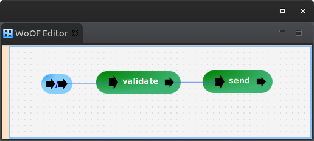

This tutorial demonstrates using JavaScript within WoOF.
The use of JavaScript in this tutorial will be to validate the request. This allows JavaScript in a single page application to be re-used on the server. In other words, validation rules used to confirm correctly entered information can be re-used server side to ensure correct defensive checks regarding the data sent. This avoids having to recode and maintain two separate sets of validation rules in different languages.
The configuration of the tutorial is as follows:
To enable using JavaScript, add the following:
<dependency> <groupId>net.officefloor.javascript</groupId> <artifactId>officejavascript</artifactId> </dependency>
The JavaScript to validate the request is as follows:
const Request = Java.type("net.officefloor.tutorial.javascripthttpserver.Request");
const HttpException = Java.type("net.officefloor.server.http.HttpException");
function validate(request) {
if (request.getId() < 1) {
throw new HttpException(400, "Invalid identifier");
}
if (!request.getName()) {
throw new HttpException(400, "Must provide name");
}
}
validate.officefloor = [
{ httpObject : Request }
];
The representation of the JavaScript function is very similar to Java methods.
However, due to lack of type information, the meta-data for the JavaScript function must be defined. The officefloor object configured against the function provides this meta-data. Please see the JavaScript polyglot tests for the various configurations.
Note: once the graal.js script engine supports decorators, the configuration will be updated to @OfficeFloor decorator to have similar look to Java for consistency.
Now that the JavaScript has validated the request, the response can be sent:
public class ResponseLogic {
public void send(ObjectResponse<Response> response) {
response.send(new Response("successful"));
}
}
This demonstrates providing polyglot solutions with OfficeFloor.
As the JavaScript script engine requires single threads, an engine is created per thread.
This does not cause state sharing problems, as all state is injected into the JavaScript function. However, if you do decide to cache state within the script, be aware that there may be more than one script engine running.
Also, as a script engine is created per thread this can push up memory. For validation (as per this tutorial), the engines run on the socket listener threads. Therefore, there is only going to be an engine per CPU (following one socket listener thread per CPU). However, be aware that using JavaScript later in the application when handled by other Team instances, that number of engines can increase causing additional memory.
The following shows the JavaScript validation rejecting an invalid request and allowing a valid request:
@RegisterExtension
public final MockWoofServerExtension server = new MockWoofServerExtension();
@Test
public void invalidIdentifier() throws Exception {
MockWoofResponse response = this.server
.send(MockWoofServer.mockJsonRequest(HttpMethod.GET, new Request(-1, "Daniel")));
response.assertJsonError(new HttpException(400, "Invalid identifier"));
}
@Test
public void invalidName() throws Exception {
MockWoofResponse response = this.server
.send(MockWoofServer.mockJsonRequest(HttpMethod.GET, new Request(1, "")));
response.assertJsonError(new HttpException(400, "Must provide name"));
}
@Test
public void validRequest() throws Exception {
MockWoofResponse response = this.server
.send(MockWoofServer.mockJsonRequest(HttpMethod.GET, new Request(1, "Daniel")));
response.assertJson(200, new Response("successful"));
}
The next tutorial covers integrating Spring beans into OfficeFloor.